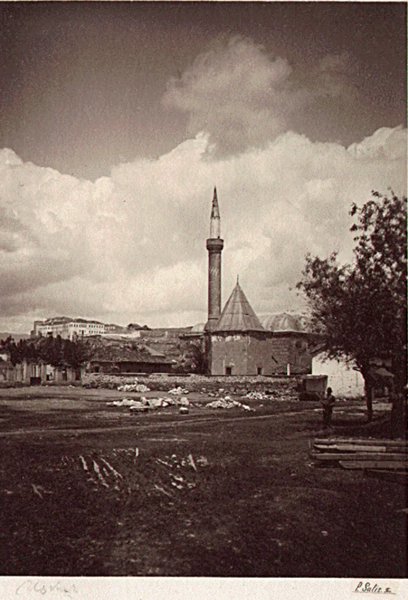
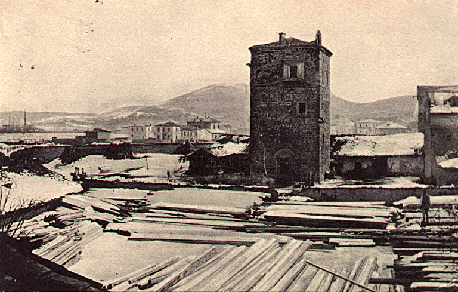

Descripción
La mezquita Burmali, fotografiada hacia mediados del siglo XIX. La única mezquita de la margen derecha del Vardar, junto al puente de piedra. Recibió su nombre del fuste en espiral (burmali) de su alminar. Se levantó a finales del siglo XV y se derribó en 1925 para construir en su lugar el Casino de Oficiales.

La mezquita Burmali y algunos edificios a su alrededor. Una calle sin urbanizar. Punto de reunión de transportistas de mercancías con carros de bueyes. - finales del siglo XIX

La mezquita Burmali - 1912 - 1918. El acceso sur al puente de piedra, con tiendas de comerciantes y artesanos muy apiñadas.

La mezquita Burmali con parte del puente de piedra y el paseo junto a ella. A su izquierda, los edificios construidos ante la entrada del puente, que albergaban tiendas y artesanos. - años 1910.

La mezquita Burmali - principios de los años 1920. Ante el puente se ven los primeros quioscos de servicios y venta, con una arquitectura cuidada en los detalles, es decir, en los tejados.

Mezquita Burmali - 1920.

La mezquita Hatundžuk con el türbe. Al fondo se ve el alminar de la mezquita de Yahya Pachá. La mezquita Hatundžuk data de 1511. La mandó construir Hani Hatun, una de las hijas de Yahya Pachá. Su nombre, Hatundžuk, significa «pequeña señora (dama)» o «señorita». - finales del siglo XIX.

La mezquita de Hadži Balaban. Se encuentra entre el Kuršumli An y la mezquita Dukandžik. Construida en el siglo XV. (finales del siglo XIX)

La torre del Bey (o torre feudal). Esta torre perteneció a algún bey. Se alza ante la entrada principal de la actual Casa del Ejército de la R. de Macedonia. No se sabe cuándo se construyó, pero se supone que a finales del siglo XVII o principios del XVIII. La foto es del siglo XIX.

La torre del Bey a finales del siglo XIX.

La torre del Bey a principios del siglo XX.

La torre del Bey, años 1910.

La antigua mezquita Kazandžiler, muy cerca del Kuršumli An. Construida en el siglo XV y conocida como la mezquita de los caldereros. (ya no existe)

Mezquita Dukandžik, construida a mediados del siglo XVI.

El Kuršumli An, construido a mediados del siglo XVI. Un edificio monumental de la arquitectura civil islámica. Está en el antiguo bazar de Skopie, junto al actual Museo de Macedonia.

La Torre del Reloj y la mezquita del sultán Murad - años 1920. La Torre del Reloj se levantó a mediados del siglo XVI (1566-1572), como la primera torre del reloj del Estado otomano. El mecanismo y el relojero que debía cuidarlo se trajeron de Szigetvár, en Hungría, tras la toma de la ciudad por los turcos. La mezquita del sultán Murad: el sultán Murad II, padre de Mehmed el Conquistador, la levantó en 1436 como fundación piadosa.

Mezquita del sultán Murad, años 1910.

La Torre del Reloj y la mezquita del sultán Murad - años 1920.

La Torre del Reloj y la mezquita del sultán Murad - años 1920.

La Torre del Reloj y la mezquita del sultán Murad - años 1920.

La Torre del Reloj y la mezquita del sultán Murad - años 1920.

La mezquita de Gazi Isa Bey - años 1920. La levantó Isa Bey, hijo de Ishak Bey, como fundación piadosa tras la muerte de su padre. (siglo XV)

La mezquita de Gazi Isa Bey - años 1920. La levantó Isa Bey, hijo de Ishak Bey, como fundación piadosa tras la muerte de su padre. (siglo XV)

La mezquita de Gazi Isa Bey - años 1920. La levantó Isa Bey, hijo de Ishak Bey, como fundación piadosa tras la muerte de su padre. (siglo XV)

Mezquita de Gazi Isa Bey - años 1920.

El cementerio turco y, al fondo, la mezquita de Gazi Isa Bey - años 1920.

Mezquita de Gazi Isa Bey - el patio - años 1920.

Mezquita de Gazi Isa Bey - el patio - años 1920.

La mezquita de Mustafa Pachá - años 1920. Erigida en 1492 por el entonces gobernador Mustafa Pachá.

La mezquita de Mustafa Pachá - años 1920. Erigida en 1492 por el entonces gobernador Mustafa Pachá.

Mezquita de Mustafa Pachá - años 1920.

La mezquita de Mustafa Pachá al fondo y, debajo, en parte, la mezquita de Pachá Yiğit Bey, la más antigua de Skopie. (ya no existe) - años 1920.

Una calle de la parte antigua y, al fondo, la mezquita de Ishak Bey o mezquita Aladža. La levantó el comandante de Skopie Ishak Bey (hijo de Pachá Yiğit Bey, conquistador de Skopie) en la primera mitad del siglo XV, en 1438. Junto a la mezquita, como fundación, levantó también un türbe, una madrasa, konaks y otros edificios de arquitectura civil islámica. En 1519 Mehmed, nieto de Ishak Bey, la reformó y añadió las dos naves laterales - años 1920.
Orientación

En el antiguo mapa de orientación
Álbum de fotos


Tema
 Acueducto4 postales
Acueducto4 postales Kale30 postales
Kale30 postales Puentes60 postales
Puentes60 postales Malecón58 postales
Malecón58 postales Plaza46 postales
Plaza46 postales Edificios66 postales
Edificios66 postales Templos cristianos19 postales
Templos cristianos19 postales Edificios musulmanes33 postales
Edificios musulmanes33 postales Casino de Oficiales29 postales
Casino de Oficiales29 postales Teatro28 postales
Teatro28 postales Estación de ferrocarril13 postales
Estación de ferrocarril13 postales Escuelas36 postales
Escuelas36 postales Parques12 postales
Parques12 postales Mercados18 postales
Mercados18 postales Calles38 postales
Calles38 postales Panorama I60 postales
Panorama I60 postales Panorama II30 postales
Panorama II30 postales Collages55 postales
Collages55 postales Inundaciones9 postales
Inundaciones9 postales Terremoto27 postales
Terremoto27 postales Skopie 200026 postales
Skopie 200026 postales